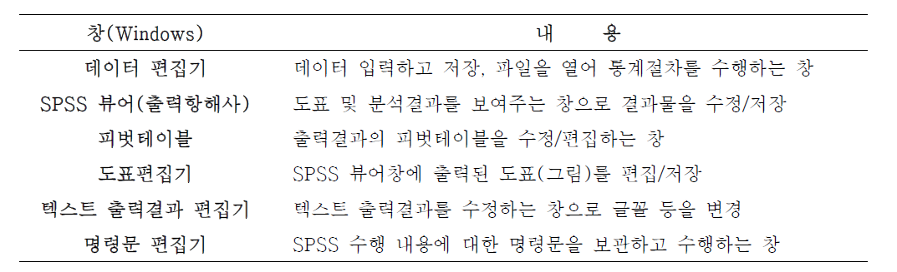
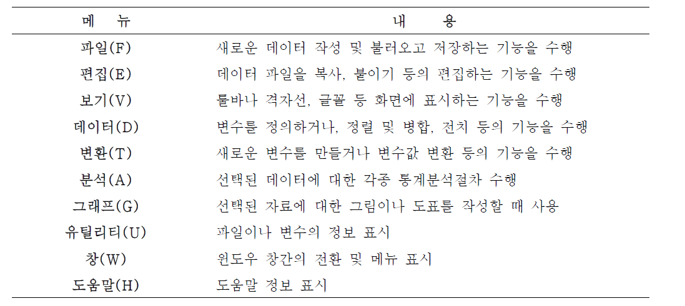
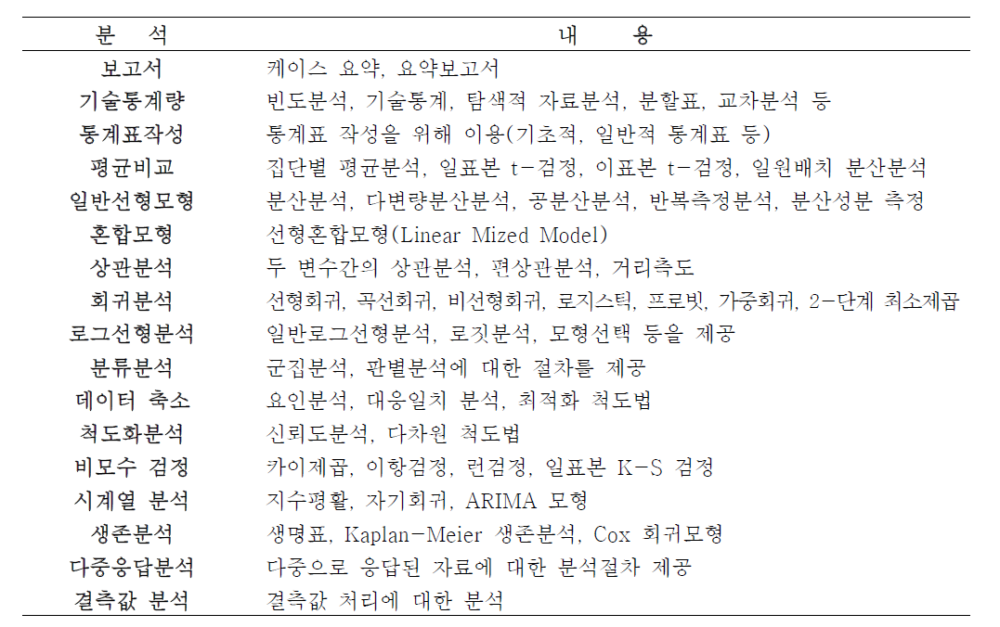
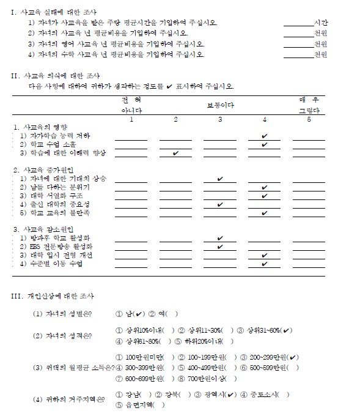
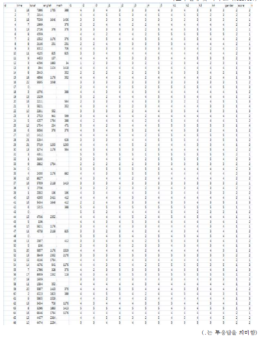
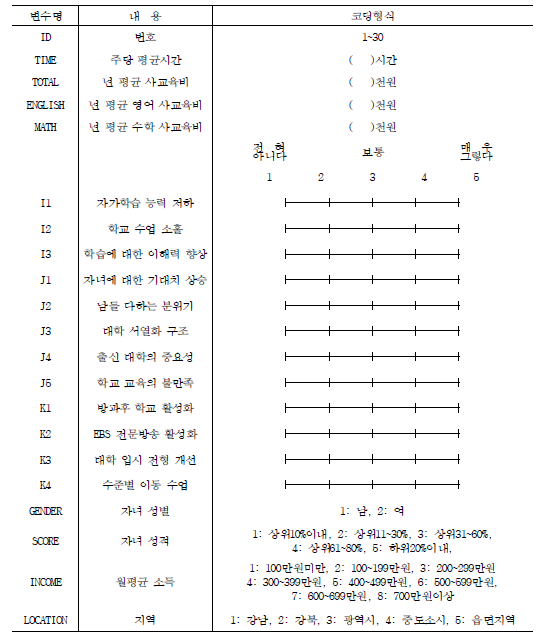

Chapter 1 IBM SPSS Statistics란?
SPSS(Statistical Package for the Social Science)는 컴퓨터를 이용하여 복잡한 자료를 편리하고 쉽게 처리 분석할 수 있도록 만들어진 통계분석 전용 소프트웨어이다. 1969년 사회과학분야의 데이터 분석을 위한 National Opinion Research Center, Chicago University에서 컴퓨터 프로그램의 모음집으로 출발하게 되었으며 SPSS을 이용하면 연구자들은 원하는 통계결과를 신속하고 용이하게 얻어낼 수 있다. 이 통계프로그램은 단순한 기술통계로부터 복잡한 다변량 통계분석까지 원하는 결과를 비교적 쉽게 얻어낼 수 있게 해 준다. 예전에는 SPSSWIN이란 이름으로 판매되었으나 현재 PASW(predictive analytics software)를 거쳐 IBM SPSS Statistics로 개명했으며 Ver.21을 판매중이다.
1.1 SPSS 창의 종류
SPSS는 6개의 창(Windows)으로 구성되어 있으며, 각 창은 다음의 설명을 보여준다.

1.2 SPSS 데이터 편집기 메뉴 설명

1.3 통계분석 절차
SPSS를 이용한 통계적 자료 분석과정은 다음과 같은 절차를 따라 수행하게 된다.
데이터 입력 및 출력
SPSS “데이터 편집기 창”을 통하여 분석할 자료를 직접 입력하거나 기존의 데이터 파일(SPSS, Excel, ACSII, Acess, dBase 파일 등)을 불러들인다.자료의 변환 및 관리
필요한 경우 주어진 자료를 이용해서 원하는 조건을 만족하는 자료만 선택하거나 기존의 변수를 이용하여 새로운 변수를 생성하고 분석할 준비를 한다.분석메뉴 선택
분석 메뉴에서는 분석자가 정리 및 분석할 자료에 적절한 통계적 분석절차(메뉴)를 선택한다.분석변수 선택
분석메뉴 대화상자에서 분석하고자 하는 변수를 선택하여 지정한다.분석수행 및 결과검토
적절한 분석메뉴와 분석변수가 선택되면 분석메뉴를 실행하고 “SPSS 뷰어창”을 통해 출력된 결과를 확인하고 검토한다.
이와 같은 과정을 통해 통계적인 분석을 진행하게 되며, SPSS에서 제공하는 통계분석 정리하면 다음과 같다.

1.4 자료의 수집
다음은 사교육 실태 및 의식 조사에서 사용된 설문지이다.
*사교육 실태 및 의식조사 참조

수집된 설문지의 자료를 입력하기 위하여 다음과 같이 정리하였다.
*사교육 실태 및 의식 조사(edu.csv)

위의 자료 파일에 대한 항목별 세부사항은 다음과 같다.
